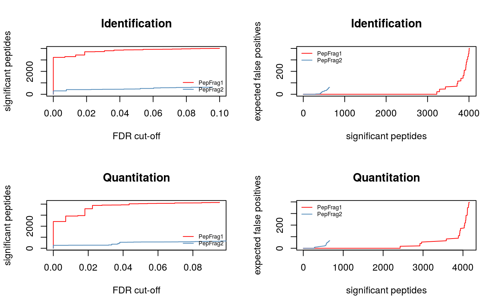
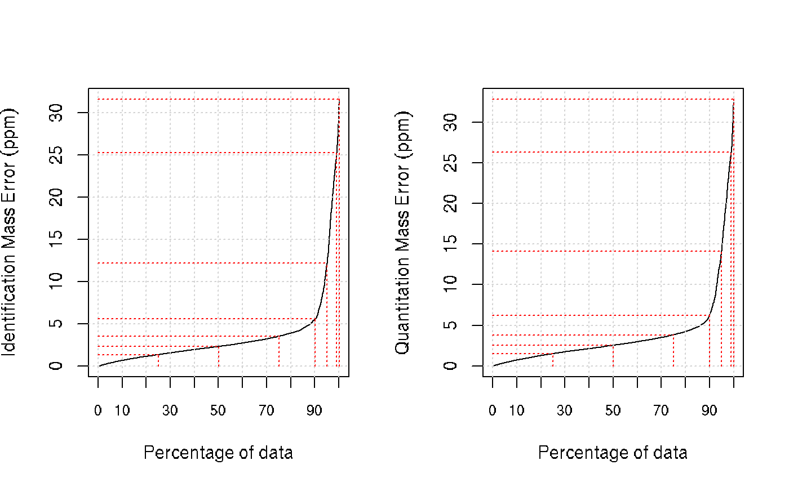
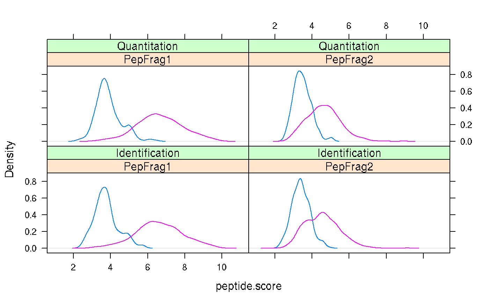
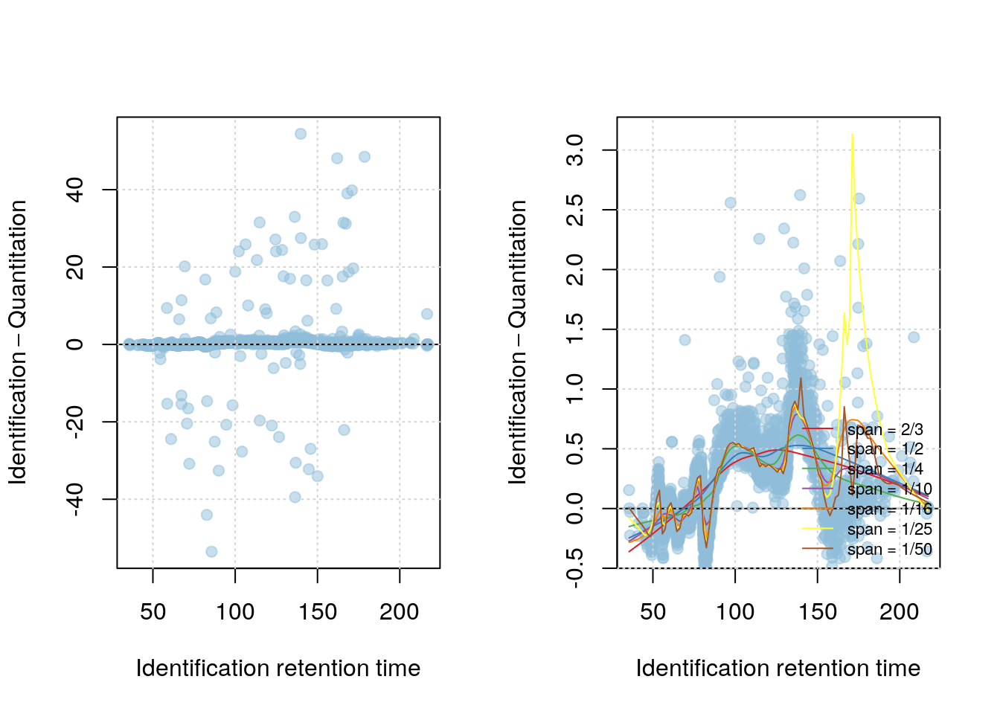
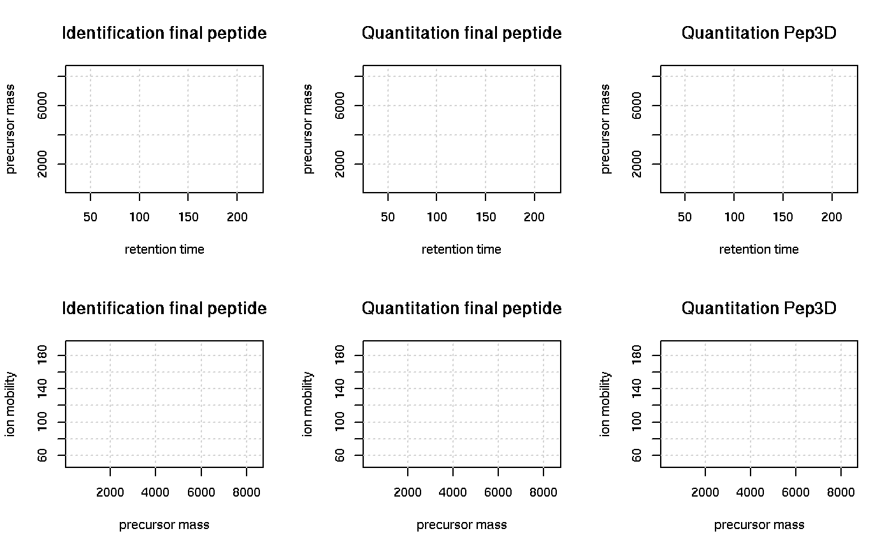
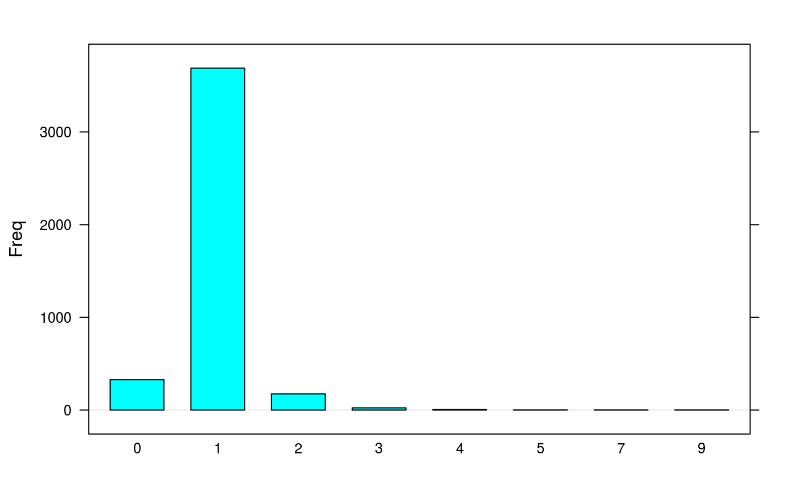
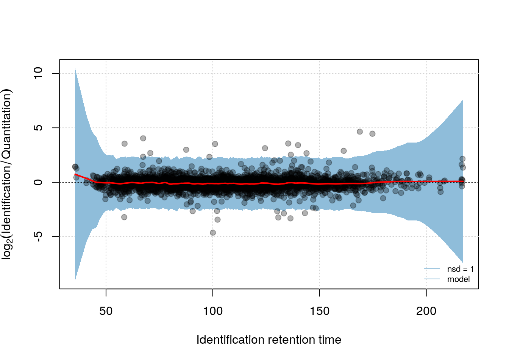

Synapter2 and synergise2
Laurent Gatto
Computational Proteomics Unit, Cambridge, UK.Sebastian Gibb
Department of Anesthesiology and Intensive Care, University Medicine Greifswald, Germany.Pavel V. Shliaha
Department of Biochemistry and Molecular Biology, University of Southern Denmark, Denmark.synapter2.RmdAbstract
This vignette describes the new functionality implemented version 2.0 of the ‘synapter’ package. It describes the typical workflow including the 3D grid search, fragment matching and correction of detector saturation.
Foreword
synapter is free and open-source software. If you use it, please support the project by citing it in publications:
Nicholas James Bond, Pavel Vyacheslavovich Shliaha, Kathryn S. Lilley, and Laurent Gatto. Improving qualitative and quantitative performance for MS\(^E\)-based label free proteomics. J. Proteome Res., 2013, 12 (6), pp 2340–2353
Questions and bugs
For bugs, typos, suggestions or other questions, please file an issue in our tracking system (https://github.com/lgatto/synapter/issues) providing as much information as possible, a reproducible example and the output of sessionInfo().
If you don’t have a GitHub account or wish to reach a broader audience for general questions about proteomics analysis using R, you may want to use the Bioconductor support site: https://support.bioconductor.org/.
Introduction
Here we describe the new functionality implemented in synapter 2.0. Namely this vignette covers the utilisation of the new 3D grid search, the fragment matching, intensity modeling and correction of detector saturation.
Workflow
The synapter2 workflow is similar to the old one in synapter1. First it is necessary to use PLGS to create the csv (and xml) files. Therefore we refer the reader to the default synapter vignette, available online and with vignette("synapter", package = "synapter").
In contrast to the original workflow the final_fragment.csv file for the identification run and a Spectrum.xml file for the quantification run are needed if the fragment matching should be applied.
Subsequently the original workflow is enhanced by the new 3D grid search and the intensity modeling. Afterwards the fragment matching could be applied. MSnbase (Gatto and Lilley 2012) is used for further analysis. The new synapter adds synapter/PLGS consensus filtering and the detector saturation correction for MSnSets.
New synapter workflow. Dark green boxes show the traditional synapter1 part and the light green boxes highlight the new synapter2 functionality.
Step-by-step workflow
Create a Synapter object
To demonstrate a typical step-by-step workflow we use example data that are available on http://proteome.sysbiol.cam.ac.uk/lgatto/synapter/data/. There is also an synobj2 object in synapterdata which contains the same data.
The Synapter constructor uses a named list of input files. Please note that we add identfragments (final_fragment.csv) and quantspectra (Spectrum.xml) because we want to apply the fragment matching later.
## Please find the raw data at:
## http://proteome.sysbiol.cam.ac.uk/lgatto/synapter/data/
library("synapter")
inlist <- list(
identpeptide = "fermentor_03_sample_01_HDMSE_01_IA_final_peptide.csv.gz",
identfragments = "fermentor_03_sample_01_HDMSE_01_IA_final_fragment.csv.gz",
quantpeptide = "fermentor_02_sample_01_HDMSE_01_IA_final_peptide.csv.gz",
quantpep3d = "fermentor_02_sample_01_HDMSE_01_Pep3DAMRT.csv.gz",
quantspectra = "fermentor_02_sample_01_HDMSE_01_Pep3D_Spectrum.xml.gz",
fasta = "S.cerevisiae_Uniprot_reference_canonical_18_03_14.fasta")
synobj2 <- Synapter(inlist, master=FALSE)synobj2## Object of class "Synapter"
## Class version 2.0.0
## Package version 1.99.0
## Data files:
## + Identification pep file: fermentor_03_sample_01_HDMSE_01_IA_final_peptide.csv.gz
## + Identification Fragment file: fermentor_02_sample_01_HDMSE_01_Pep3D_Spectrum.xml.gz
## + Quantitation pep file: fermentor_02_sample_01_HDMSE_01_IA_final_peptide.csv.gz
## + Quantitation Pep3DAMRT file: fermentor_02_sample_01_HDMSE_01_Pep3DAMRT.csv.gz
## + Quantitation Spectrum file: fermentor_02_sample_01_HDMSE_01_Pep3D_Spectrum.xml.gz
## + Fasta file: S.cerevisiae_Uniprot_reference_canonical_18_03_14.fasta
## Log:
## [1] "Instance created on Tue Apr 4 09:01:34 2017"
## [2] "Read identification peptide data [11471,16]"
## [ 10 lines ]
## [13] "Read identification fragment data [7078]"
## [14] "Read quantitation spectra [36539]"Filtering
The first steps in each synapter analysis are filtering by peptide sequence, peptide length, ppm error and false positive rate.
Here we use the default values for each method. But the accompanying plotting methods should be used to find the best threshold:
filterUniqueDbPeptides(synobj2,
missedCleavages=0,
IisL=TRUE)
filterPeptideLength(synobj2, l=7)
plotFdr(synobj2)
filterQuantPepScore(synobj2, method="BH",
fdr=0.05)
filterIdentPepScore(synobj2, method="BH",
fdr=0.05)
par(mfcol=c(1, 2))
plotPpmError(synobj2, what="Ident")
plotPpmError(synobj2, what="Quant")
par(mfcol=c(1, 1))
filterQuantPpmError(synobj2, ppm=20)
filterIdentPpmError(synobj2, ppm=20)
plotPepScores(synobj2)
filterIdentProtFpr(synobj2, fpr=0.05)
filterQuantProtFpr(synobj2, fpr=0.05)Modeling retention time
Next we merge the identified peptides from the identification run and quantification run and build a LOWESS based retention time model to remove systematic shifts in the retention times. Here we use the default values but as stated above the plotting methods should be used to find sensible thresholds.
mergePeptides(synobj2)
plotRt(synobj2, what="data")
setLowessSpan(synobj2, span=0.05)
modelRt(synobj2)
par(mfcol=c(1, 2))
plotRtDiffs(synobj2)
plotRt(synobj2, what="model", nsd=1)
par(mfcol=c(1, 1))
plotFeatures(synobj2, what="all", ionmobility=TRUE)
Grid search
To find EMRTS (exact m/z-retention time pairs) we try are running a grid search to find the best retention time tolerance and m/z tolerance that results in the most correct one-to-one matching in the merged (already identified) data. If the identification and quantitation run are HDMS\(^E\) data we could use the new 3D grid search that looks for the best matching in the retention time, m/z and ion mobility (drift time) domain to increase the accuracy. If one or both datasets are MS\(^E\) data it falls back to the traditional 2D grid search.
searchGrid(synobj2,
imdiffs=seq(from=0.6, to=1.6, by=0.2),
ppms=seq(from=2, to=20, by=2),
nsds=seq(from=0.5, to=5, by=0.5))
setBestGridParams(synobj2)
findEMRTs(synobj2)
plotEMRTtable(synobj2)
Fragment matching
For the details of the fragment matching procedure we refer to the fragment matching vignette that is available online and with vignette("fragmentmatching", package = "synapter"). Briefly we compare the fragments of the identification run with the spectra from the quantification run and remove entries where there are very few/none common peaks/fragments between them.
First we starting by removing less intense fragments and peaks.
filterFragments(synobj2,
what="fragments.ident",
minIntensity=70)
filterFragments(synobj2,
what="spectra.quant",
minIntensity=70)Next we look for common peaks via fragmentMatching:
fragmentMatching(synobj2)## Warning in object$fragmentMatching(verbose = verbose): FragmentMatching ppm
## tolerance undefined. Setting to default value.We get tables for unique and non-unique matches:
knitr::kable(fragmentMatchingPerformance(synobj2,
what="unique"))| ncommon | tp | fp | tn | fn | all | fdr |
|---|---|---|---|---|---|---|
| 0 | 3097 | 79 | 0 | 0 | 4159 | 0.0248741 |
| 1 | 2556 | 22 | 57 | 541 | 2864 | 0.0085337 |
| 2 | 1682 | 12 | 67 | 1415 | 1864 | 0.0070838 |
| 3 | 1193 | 4 | 75 | 1904 | 1339 | 0.0033417 |
| 4 | 862 | 1 | 78 | 2235 | 987 | 0.0011587 |
| 5 | 651 | 1 | 78 | 2446 | 754 | 0.0015337 |
| 6 | 488 | 1 | 78 | 2609 | 578 | 0.0020450 |
| 7 | 372 | 1 | 78 | 2725 | 453 | 0.0026810 |
| 8 | 294 | 0 | 79 | 2803 | 367 | 0.0000000 |
| 9 | 240 | 0 | 79 | 2857 | 307 | 0.0000000 |
| 10 | 186 | 0 | 79 | 2911 | 245 | 0.0000000 |
| 11 | 149 | 0 | 79 | 2948 | 197 | 0.0000000 |
| 12 | 124 | 0 | 79 | 2973 | 165 | 0.0000000 |
| 13 | 95 | 0 | 79 | 3002 | 126 | 0.0000000 |
| 14 | 82 | 0 | 79 | 3015 | 105 | 0.0000000 |
| 15 | 59 | 0 | 79 | 3038 | 76 | 0.0000000 |
| 16 | 48 | 0 | 79 | 3049 | 61 | 0.0000000 |
| 17 | 41 | 0 | 79 | 3056 | 53 | 0.0000000 |
| 18 | 27 | 0 | 79 | 3070 | 36 | 0.0000000 |
| 19 | 21 | 0 | 79 | 3076 | 26 | 0.0000000 |
| 20 | 14 | 0 | 79 | 3083 | 16 | 0.0000000 |
| 21 | 12 | 0 | 79 | 3085 | 14 | 0.0000000 |
| 22 | 8 | 0 | 79 | 3089 | 10 | 0.0000000 |
| 23 | 6 | 0 | 79 | 3091 | 8 | 0.0000000 |
| 24 | 5 | 0 | 79 | 3092 | 6 | 0.0000000 |
| 25 | 4 | 0 | 79 | 3093 | 5 | 0.0000000 |
| 26 | 3 | 0 | 79 | 3094 | 3 | 0.0000000 |
| 27 | 3 | 0 | 79 | 3094 | 3 | 0.0000000 |
| 28 | 1 | 0 | 79 | 3096 | 1 | 0.0000000 |
knitr::kable(fragmentMatchingPerformance(synobj2,
what="non-unique"))| deltacommon | tp | fp | tn | fn | all | fdr |
|---|---|---|---|---|---|---|
| 0 | 163 | 33 | 0 | 0 | 4159 | 0.1683673 |
| 1 | 163 | 2 | 31 | 0 | 374 | 0.0121212 |
| 2 | 132 | 1 | 32 | 31 | 304 | 0.0075188 |
| 3 | 119 | 1 | 32 | 44 | 276 | 0.0083333 |
| 4 | 110 | 0 | 33 | 53 | 256 | 0.0000000 |
| 5 | 95 | 0 | 33 | 68 | 226 | 0.0000000 |
| 6 | 85 | 0 | 33 | 78 | 202 | 0.0000000 |
| 7 | 75 | 0 | 33 | 88 | 178 | 0.0000000 |
| 8 | 67 | 0 | 33 | 96 | 161 | 0.0000000 |
| 9 | 60 | 0 | 33 | 103 | 145 | 0.0000000 |
| 10 | 53 | 0 | 33 | 110 | 127 | 0.0000000 |
| 11 | 43 | 0 | 33 | 120 | 106 | 0.0000000 |
| 12 | 37 | 0 | 33 | 126 | 92 | 0.0000000 |
| 13 | 27 | 0 | 33 | 136 | 71 | 0.0000000 |
| 14 | 20 | 0 | 33 | 143 | 56 | 0.0000000 |
| 15 | 12 | 0 | 33 | 151 | 37 | 0.0000000 |
| 16 | 10 | 0 | 33 | 153 | 26 | 0.0000000 |
| 17 | 8 | 0 | 33 | 155 | 21 | 0.0000000 |
| 18 | 7 | 0 | 33 | 156 | 18 | 0.0000000 |
| 19 | 4 | 0 | 33 | 159 | 9 | 0.0000000 |
| 20 | 2 | 0 | 33 | 161 | 5 | 0.0000000 |
| 21 | 2 | 0 | 33 | 161 | 5 | 0.0000000 |
| 22 | 2 | 0 | 33 | 161 | 5 | 0.0000000 |
| 23 | 1 | 0 | 33 | 162 | 3 | 0.0000000 |
| 24 | 1 | 0 | 33 | 162 | 3 | 0.0000000 |
| 25 | 1 | 0 | 33 | 162 | 3 | 0.0000000 |
Subsequently we could filter by minimal accepted common peaks:
filterUniqueMatches(synobj2, minNumber=1)
filterNonUniqueMatches(synobj2, minDelta=2)
filterNonUniqueIdentMatches(synobj2)Finally we rescue EMRTs that are filtered but were identified by PLGS:
rescueEMRTs(synobj2, method="rescue")Modeling intensity
In a similar manner as correcting for the retention time drift we correct systematic errors of the intensity via a LOWESS model. The function modelIntensity has to applied after findEMRTs. The model is build on the merged peptides as it is done for the retention time model. But in contrast to the retention time model the prediction is necessary for the matched quantitation data.
plotIntensity(synobj2, what="data")
setLowessSpan(synobj2, 0.05)
modelIntensity(synobj2)
plotIntensity(synobj2, what="model", nsd=1)
synergise2
The whole workflow described in the step-by-step workflow is wrapped in the synergise2 function. As side effect it generates a nice HTML report. An example could be found on https://github.com/lgatto/synapter.
synobj2 <- synergise2(filenames = inlist,
outputdir = ".")synapter/PLGS agreement
For the next steps we need to convert the Synapter object into an MSnSet.
msn <- as(synobj2, "MSnSet")Subsequently we look for synapter/PLGS agreement (this is more useful for a combined MSnSet; see basic synapter online or with vignette("synapter", package = "synapter")). synapterPlgsAgreement adds an agreement column for each sample and counts the agreement/disagreement in additional columns:
msn <- synapterPlgsAgreement(msn)
knitr::kable(head(fData(msn)[, grepl("[Aa]gree",
fvarLabels(msn)),
drop=FALSE]))| synapterPlgsAgreement.fermentor_02_sample_01_HDMSE_01 | nAgree | nDisagree | synapterPlgsAgreementRatio | |
|---|---|---|---|---|
| NVNDVIAPAFVK | agree | 1 | 0 | 1 |
| TAGIQIVADDLTVTNPK | agree | 1 | 0 | 1 |
| WLTGPQLADLYHSLMK | agree | 1 | 0 | 1 |
| AAQDSFAAGWGVMVSHR | agree | 1 | 0 | 1 |
| TFAEALR | agree | 1 | 0 | 1 |
| LGANAILGVSLAASR | no_synapter_transfer | 0 | 0 | NaN |
Correction of detector saturation
As described in (Shliaha et al. 2013) Synapt G2 devices suffer from detector saturation. This could be partly corrected by requantify. Therefore a saturationThreshold has to be given above that intensity saturation potentially happens. There are several methods available.
msncor <- requantify(msn,
saturationThreshold=1e5,
method="sum")If an MSnSet object was requantified using the "sum" requantification method TOP3 normalisation is not valid anymore because the most abundant proteins are penalised by removing high intensity isotopes (for details see ?requantify and ?rescaleForTop3). This could be overcome by calling rescaleForTop3:
msncor <- rescaleForTop3(before=msn,
after=msncor,
saturationThreshold=1e5)New functions not covered in this vignette
Since synapter 2.0 makeMaster supports fragment files as well. It is possible to create a fragment library that could used for fragment matching because of the large data this could not covered in this vignette. An introduction how to create a master could be found in the basic synapter vignette, available online or with vignette("synapter", package = "synapter"). Please find details about creating a fragment library in ?makeMaster.
Session information
All software and respective versions used to produce this document are listed below.
sessionInfo()## R version 3.5.1 Patched (2018-08-16 r75161)
## Platform: x86_64-pc-linux-gnu (64-bit)
## Running under: Ubuntu 14.04.5 LTS
##
## Matrix products: default
## BLAS: /usr/lib/atlas-base/atlas/libblas.so.3.0
## LAPACK: /usr/lib/lapack/liblapack.so.3.0
##
## locale:
## [1] LC_CTYPE=en_GB.UTF-8 LC_NUMERIC=C
## [3] LC_TIME=en_GB.UTF-8 LC_COLLATE=en_GB.UTF-8
## [5] LC_MONETARY=en_GB.UTF-8 LC_MESSAGES=en_GB.UTF-8
## [7] LC_PAPER=en_GB.UTF-8 LC_NAME=C
## [9] LC_ADDRESS=C LC_TELEPHONE=C
## [11] LC_MEASUREMENT=en_GB.UTF-8 LC_IDENTIFICATION=C
##
## attached base packages:
## [1] parallel stats graphics grDevices utils datasets methods
## [8] base
##
## other attached packages:
## [1] synapterdata_1.18.0 synapter_2.5.2 MSnbase_2.7.4
## [4] ProtGenerics_1.12.0 BiocParallel_1.14.2 mzR_2.15.2
## [7] Rcpp_0.12.18 Biobase_2.40.0 BiocGenerics_0.26.0
## [10] BiocStyle_2.8.2
##
## loaded via a namespace (and not attached):
## [1] vsn_3.48.1 splines_3.5.1 foreach_1.4.4
## [4] assertthat_0.2.0 highr_0.7 affy_1.58.0
## [7] stats4_3.5.1 yaml_2.2.0 impute_1.54.0
## [10] pillar_1.3.0 backports_1.1.2 lattice_0.20-35
## [13] glue_1.3.0 limma_3.36.3 digest_0.6.16
## [16] RColorBrewer_1.1-2 XVector_0.20.0 qvalue_2.12.0
## [19] colorspace_1.3-2 htmltools_0.3.6 preprocessCore_1.42.0
## [22] Matrix_1.2-14 plyr_1.8.4 MALDIquant_1.18
## [25] XML_3.98-1.16 pkgconfig_2.0.2 bookdown_0.7
## [28] zlibbioc_1.26.0 purrr_0.2.5 scales_1.0.0
## [31] affyio_1.50.0 cleaver_1.18.0 tibble_1.4.2
## [34] IRanges_2.14.11 ggplot2_3.0.0 lazyeval_0.2.1
## [37] survival_2.42-6 magrittr_1.5 crayon_1.3.4
## [40] memoise_1.1.0 evaluate_0.11 fs_1.2.6
## [43] doParallel_1.0.11 MASS_7.3-50 xml2_1.2.0
## [46] BiocInstaller_1.30.0 tools_3.5.1 hms_0.4.2
## [49] stringr_1.3.1 S4Vectors_0.18.3 munsell_0.5.0
## [52] bindrcpp_0.2.2 Biostrings_2.48.0 pcaMethods_1.72.0
## [55] compiler_3.5.1 pkgdown_1.1.0 mzID_1.18.0
## [58] rlang_0.2.2 grid_3.5.1 iterators_1.0.10
## [61] rmarkdown_1.10 gtable_0.2.0 codetools_0.2-15
## [64] multtest_2.36.0 roxygen2_6.1.0 reshape2_1.4.3
## [67] R6_2.2.2 knitr_1.20 dplyr_0.7.6
## [70] bindr_0.1.1 commonmark_1.5 rprojroot_1.3-2
## [73] readr_1.1.1 desc_1.2.0 stringi_1.2.4
## [76] tidyselect_0.2.4 xfun_0.3References
Gatto, Laurent, and Kathryn S Lilley. 2012. “MSnbase – an R/Bioconductor Package for Isobaric Tagged Mass Spectrometry Data Visualization, Processing and Quantitation.” Bioinformatics 28 (2): 288–9. doi:10.1093/bioinformatics/btr645.
Shliaha, Pavel Vyacheslavovich, Nicholas James Bond, Laurent Gatto, and Kathryn S. Lilley. 2013. “The Effects of Travelling Wave Ion Mobility Separation on Data Independent Acquisition in Proteomics Studies.” Journal of Proteome Research 2 (6). doi:10.1021/pr300775k.